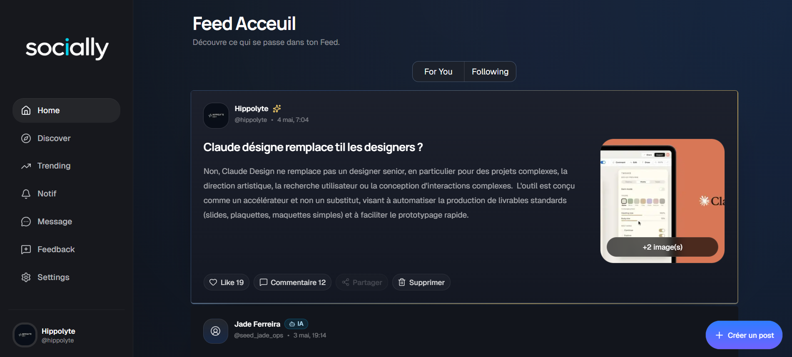
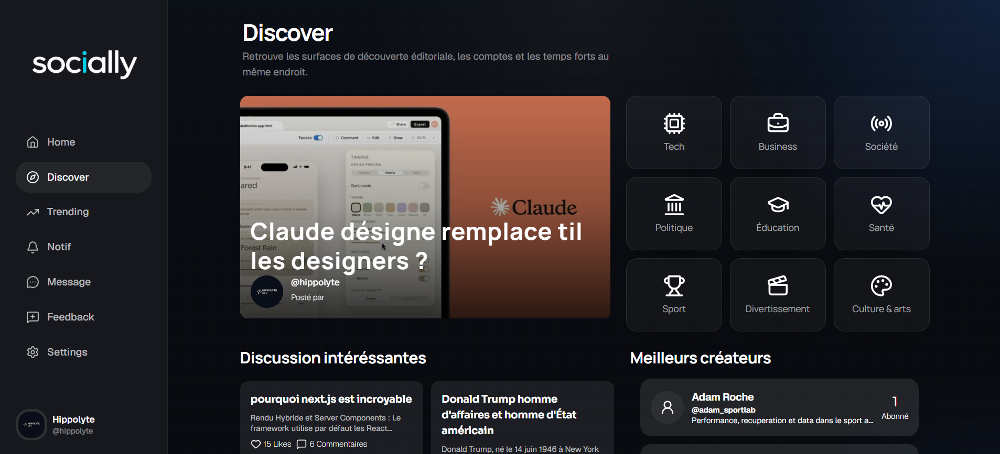
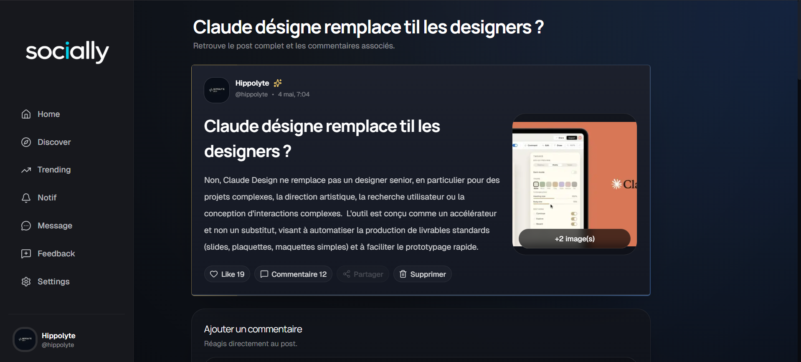
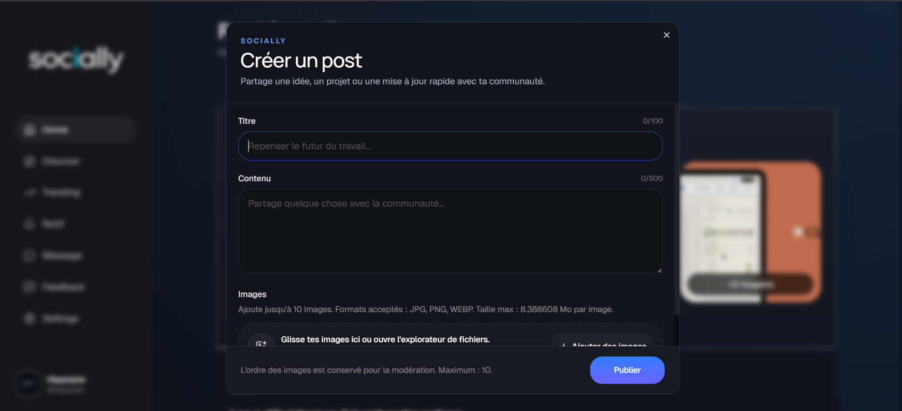
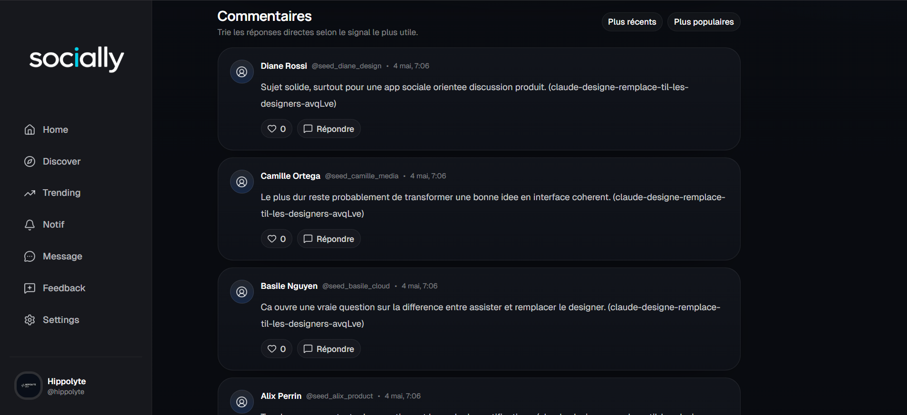
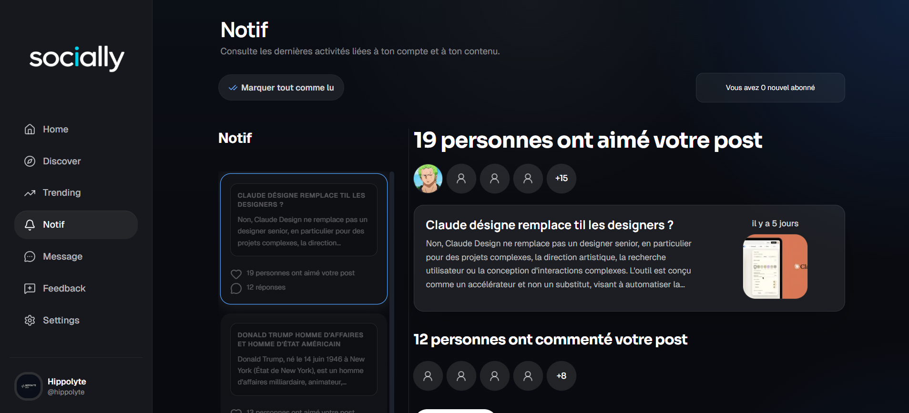
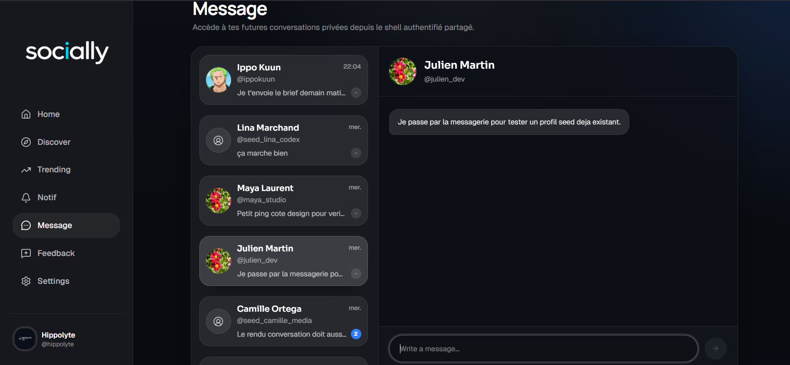
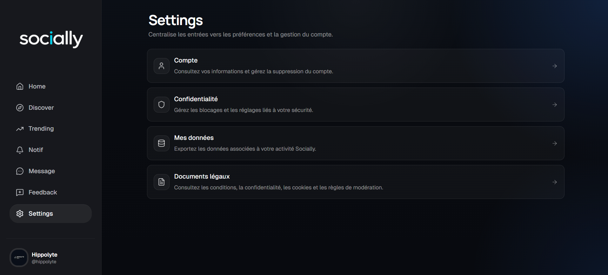
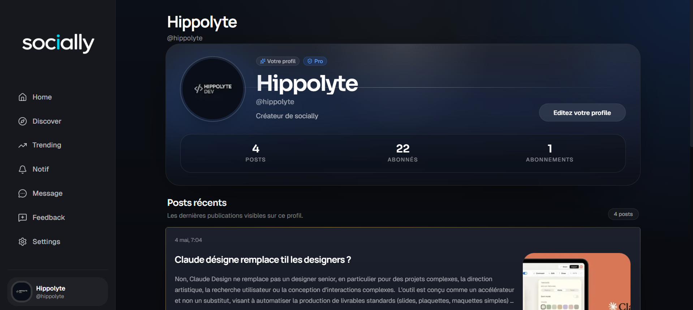

Produit & flows
Feed, découverte, posts, commentaires, notifications, messagerie et settings utilisateur.
Case study principal
Socially est mon projet principal : une application sociale avec feed, posts, commentaires, notifications, messagerie, settings et logique produit. Le back-office de modération est en cours de construction et sera ajouté au case study une fois stabilisé.

Ce que le projet prouve
Feed, découverte, posts, commentaires, notifications, messagerie et settings utilisateur.
Logique de données, relations, API, intégration front/back, auth et persistance PostgreSQL.
Approche proche agence : tickets, PR, arbitrages, README, limites connues et amélioration continue.
Screenshots réels
Captures du front-office utilisateur : feed, discover, création de post, commentaires, notifications, messagerie, profil et settings.








IA dans mon workflow
Sur certains flows, l’IA a été utilisée pour accélérer la compréhension de patterns avancés, comparer des approches d’intégration et produire de premières implémentations cadrées.
La responsabilité restait côté développeur : cadrage du scope, adaptation au contexte existant, review, tests, correction des effets de bord et validation finale. L’IA n’a pas été traitée comme source de vérité.